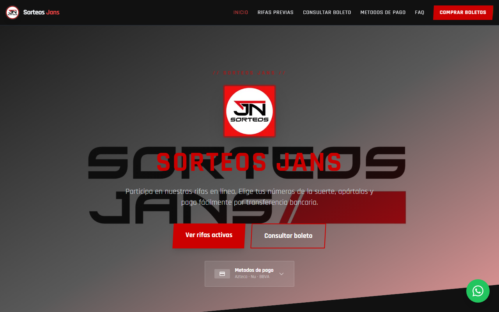
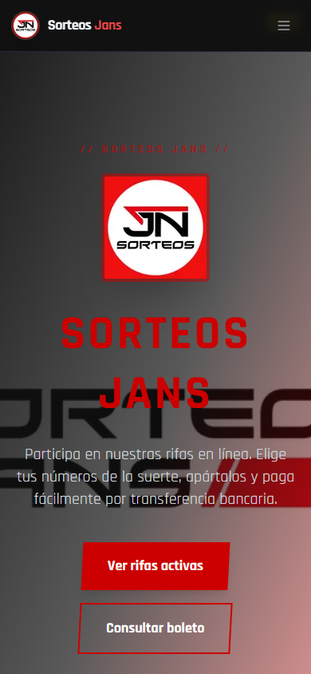
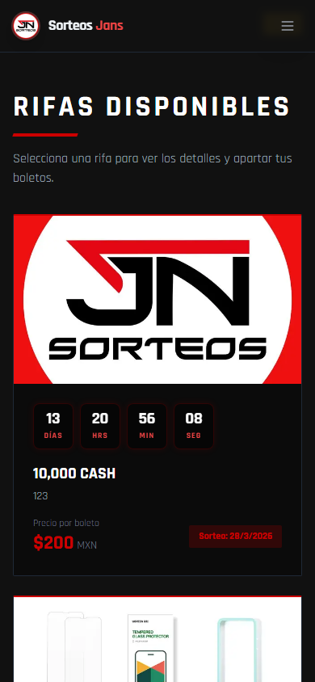

nombre: "1" y descripcion: "1", y otra con descripcion: "123". Cualquier crawler o quality rater que visite el sitio verá esto. Activa los clasificadores de spam de Google y destruye la confianza de usuarios reales.
headers() en app/layout.tsx (para generar el nonce CSP) opta el árbol de rutas completo en dynamic rendering, sobreescribiendo export const revalidate = 60. Todas las páginas retornan Cache-Control: private, no-cache, no-store y X-Vercel-Cache: MISS en cada request. El TTFB debería ser ~50ms desde edge cache; actualmente es ~560ms desde origen para cada visita.
layout.tsx a un Server Component que no llame a headers(), o leer el nonce desde request.headers en el middleware y pasarlo como response header, en vez de llamar headers() en el componente.
app/rifas/[id]/page.tsx, el schema Event tiene tres errores: (1) falta endDate — requerido por Google para Event rich results, (2) price: String(rifa.precio_boleto) debe ser número no string, (3) falta seller en Event > offers.
endDate: rifa.fecha_sorteo, // agregar
price: rifa.precio_boleto, // quitar String()
seller: { "@id": `${BASE_URL}/#organization` } // agregar en Event offers
https://sorteosjans.com.mx → https://www.sorteosjans.com.mx usa HTTP 307 Temporary Redirect. Google no consolida link equity en redirects 307. Cualquier enlace externo o compartido en WhatsApp que use el dominio sin www no transfiere autoridad.
/cuentas → /tarjetas que también usa 307.og:url = https://www.sorteosjans.com.mx y el og:title/description del homepage. Las tarjetas de WhatsApp/Facebook de cualquier sub-página muestran el contenido del homepage. También confunde a sistemas de IA que atribuyen el contenido a la URL incorrecta.
openGraph: { url: "https://www.sorteosjans.com.mx/rifas", title: "...", description: "..." } al export de metadata.loading="lazy", retrasando su fetch hasta detección in-viewport. Esto probablemente resulta en LCP "Needs Improvement" o "Poor" en móvil.
<Image ... priority={index === 0} />
sizes="100vw". El browser solicita imágenes de ~1920px para un contenedor de ~400px. Transfiere 3-4× más datos de imagen de los necesarios.
sizes="(min-width: 1024px) 33vw, (min-width: 768px) 50vw, 100vw"
Organization en app/layout.tsx no tiene array sameAs. Google no puede vincular la entidad de marca con perfiles sociales, lo que dificulta el Knowledge Panel.
"sameAs": [ "https://www.facebook.com/sorteosjansn", "https://www.instagram.com/sorteosjansn" ]
ItemList con las rifas activas habilitaría el carrusel de eventos/productos de Google en resultados de búsqueda.
const itemListSchema = {
"@context": "https://schema.org",
"@type": "ItemList",
name: "Rifas Activas — Sorteos Jans",
url: `${BASE_URL}/rifas`,
itemListElement: rifas.map((rifa, i) => ({
"@type": "ListItem",
position: i + 1,
url: `${BASE_URL}/rifas/${rifa.id}`,
name: rifa.nombre,
})),
};
app/rifas-previas/[id]/page.tsx no exporta generateMetadata. Los títulos en resultados de búsqueda muestran el string del template "%s | Sorteos Jans" sin substitución.
generateMetadata con fetch desde Firestore, siguiendo el mismo patrón de app/rifas/[id]/page.tsx./public/{key}.txt. (3) Declarar en app/robots.ts. (4) Hacer POST a api.indexnow.org/indexnow desde el admin panel al activar una rifa.
POST https://api.indexnow.org/indexnow
{
"host": "www.sorteosjans.com.mx",
"key": "{tu-key}",
"urlList": ["https://www.sorteosjans.com.mx/rifas/{id}"]
}
# Sorteos Jans > Plataforma de rifas en línea en México. Compra boletos, elige números, paga por transferencia bancaria, confirma por WhatsApp. ## Páginas principales - Rifas activas: https://www.sorteosjans.com.mx/rifas - Consultar boleto: https://www.sorteosjans.com.mx/consulta - Preguntas frecuentes: https://www.sorteosjans.com.mx/faq - Sobre nosotros: https://www.sorteosjans.com.mx/sobre-nosotros - Métodos de pago: https://www.sorteosjans.com.mx/tarjetas
useEffect. El primer wave de crawl de Google ve contenido vacío, no puede inyectar schema, y no genera título dinámico.
app/rifas/[id]/page.tsx. Usar generateStaticParams + generateMetadata con fetch desde Firebase Admin SDK.2026-03-13T23:24:30.011Z. Google interpreta esto como fechas fabricadas e ignora el campo completamente, perdiendo la señal de frescura.
new Date() con fechas reales por ruta estática. El documento site_content/texts en Firestore ya tiene updatedAt — usarlo para las páginas de contenido CMS.<link rel="preconnect" href="https://u0qlqi6owu46oklm.public.blob.vercel-storage.com" /> <link rel="preconnect" href="https://fonts.gstatic.com" crossOrigin="" /> <link rel="preconnect" href="https://www.clarity.ms" />
app/layout.tsx: icons: { apple: "/apple-touch-icon.png" }, themeColor: "#e02020", y crear /public/manifest.json mínimo.www tiene HSTS completo (max-age=63072000; includeSubDomains; preload). El dominio apex (sorteosjans.com.mx) solo tiene max-age, sin los flags de subdominio ni preload. Bloquea el envío al HSTS Preload List.
Strict-Transport-Security: max-age=63072000; includeSubDomains; preload. Luego enviar en hstspreload.org./rifas/bWLnZc44JHTgK96c84mi. La URL no aporta señal de keyword. Comparar con /rifas/iphone-15-pro-marzo-2026 que sí lo haría.
slug a los documentos de rifa en Firestore y usar en las rutas. Mantener compatibilidad por ID para rifas existentes con redirect.| # | Issue | Fix | Archivo |
|---|---|---|---|
| 18 | font-display: swap causa FOUT/CLS | Cambiar a display: "optional" en next/font config | app/layout.tsx |
| 19 | H1 homepage solo dice "Sorteos Jans" | Cambiar a "Rifas en Línea en México — Sorteos Jans" | CMS |
| 20 | Tildes faltantes: "mas", "Navegacion", "Metodos" | Corregir en Navbar y Footer | components/Navbar.tsx, Footer.tsx |
| 21 | X-Powered-By: Next.js expuesto | poweredByHeader: false | next.config.mjs |
| 22 | Sin BreadcrumbList en páginas de rifa | Componente BreadcrumbSchema reutilizable | Nuevo componente |
| 23 | Sin <noscript> fallback | Mensaje + link a WhatsApp | app/layout.tsx |
| 24 | Sin image sitemap para imágenes de rifas | Agregar <image:image> en sitemap.ts | app/sitemap.ts |
| 25 | Falta página /como-funciona | Crear con contenido paso a paso — query AI de mayor volumen | Nueva ruta |
| 26 | Chunk vendor fd9d1056 de 172KB (Firebase?) | Dynamic import si solo se usa en /rifas/[id] | app/rifas/[id]/page.tsx |
| 27 | Sin AboutPage schema en /sobre-nosotros | Agregar JSON-LD que enlace al @graph del layout | app/sobre-nosotros/page.tsx |
| Página | Schema presente | Estado | Nota |
|---|---|---|---|
/ (layout global) |
Organization + WebSite + SearchAction | Pass | Falta sameAs. Logo apunta a /images/3.jpeg |
/rifas/[id] |
Event + Product | Crítico | Falta endDate, price es string, falta seller en Event offers |
/faq |
FAQPage | Medio | Válido. Sin Google rich results (restricción Aug 2023 para comerciales), mantiene valor para IA |
/rifas |
— ninguno — | Alto | Agregar ItemList con rifas activas |
/rifas-previas/[id] |
— ninguno — | Alto | Página es "use client", ningún schema puede inyectarse |
/sobre-nosotros |
— ninguno — | Medio | Agregar AboutPage enlazando al @graph del layout |
/consulta |
— ninguno — | Bajo | Página de herramienta — schema opcional |
self.__next_f.push() con nonce. Crawlers que parsean solo HTML semántico (<p>, <h1>, <article>) y no ejecutan JS verán un body prácticamente vacío. El contenido real del body existe en los script payloads del React Flight, no en tags HTML estáticos.| Crawler | Estado | Regla en robots.txt |
|---|---|---|
| GPTBot (OpenAI) | Permitido | Wildcard Allow: / |
| ClaudeBot (Anthropic) | Permitido | Wildcard Allow: / |
| PerplexityBot | Permitido | Wildcard Allow: / |
| CCBot (Common Crawl) | Permitido | Wildcard Allow: / |
| llms.txt | 404 | No existe |
| Prioridad | Issue | Archivo | Esfuerzo |
|---|---|---|---|
| Crítico | Eliminar datos de rifa "1" y "123" de producción | Firestore admin | 5 min |
| Crítico | Fix ISR: mover headers() fuera de layout.tsx | app/layout.tsx, middleware.ts | Medio |
| Crítico | Event schema: endDate + price number + seller | app/rifas/[id]/page.tsx | Bajo |
| Crítico | Fix 307 → 301 redirect en dominio apex | Vercel Dashboard | 5 min |
| Alto | Fix og:url en todas las sub-páginas | Cada page metadata | Bajo |
| Alto | priority en primera imagen de /rifas | app/rifas/page.tsx | Bajo |
| Alto | Fix sizes="100vw" en grid de rifas | app/rifas/page.tsx | Bajo |
| Alto | Agregar sameAs a Organization schema | app/layout.tsx | Bajo |
| Alto | Agregar ItemList schema en /rifas | app/rifas/page.tsx | Bajo |
| Alto | Agregar generateMetadata a /rifas-previas/[id] | app/rifas-previas/[id]/page.tsx | Bajo |
| Alto | Implementar IndexNow | app/robots.ts + admin panel | Medio |
| Alto | Agregar identidad operador + contenido /sobre-nosotros | CMS (Firestore) | Medio |
| Medio | Crear /public/llms.txt | — | Bajo |
| Medio | Expandir respuestas FAQ a 134–167 palabras | CMS (Firestore) | Medio |
| Medio | Convertir /rifas-previas/[id] a Server Component | app/rifas-previas/[id]/page.tsx | Medio |
| Medio | Fix sitemap lastmod — fechas reales | app/sitemap.ts | Bajo |
| Medio | Agregar preconnect hints | app/layout.tsx | Bajo |
| Medio | Agregar apple-touch-icon, theme-color, manifest | app/layout.tsx | Bajo |
| Medio | Fix HSTS apex (includeSubDomains + preload) | Vercel headers config | Bajo |
| Bajo | font-display: optional | app/layout.tsx | Bajo |
| Bajo | H1 keyword-enriched en homepage | CMS | Bajo |
| Bajo | Corregir tildes en Navbar/Footer | components/ | Bajo |
| Bajo | poweredByHeader: false | next.config.mjs | Bajo |
| Bajo | BreadcrumbList en páginas de rifa | Nuevo componente | Bajo |
| Bajo | noscript fallback | app/layout.tsx | Bajo |
| Bajo | Página /como-funciona — mayor volumen de query IA | Nueva ruta | Alto |
| Bajo | Slugs legibles en URLs de rifas | Firestore + routing | Alto |